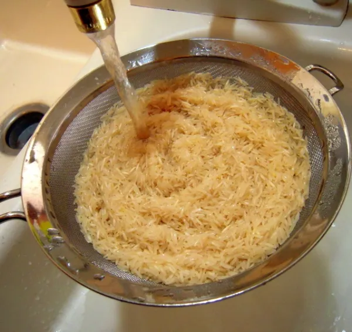

Como preparar un menú saludable
Segundo Plato: Arroz salteado y verduras variadas al curry
Indice de Contenido:
- Ingredientes
- Paso a Paso
- Resultado Final
Ingredientes
- Ponemos 200 gramos de arroz basmati integral
- Cogemos 450 ml de Agua
- Cogemos 1 unidad de Zanahoria
- Añadimos 200 gramos de Guisantes
- Agregamos 1 unidad de Pimiento Verde
- Añadimos 1/2 unidad de Pimiento Rojo
- Ponemos 1/2 unidad de puerro
- Agregamos 1 cucharada pequeña de Curry
- Añadimos 1/2 unidad de pimienta
- Cogemos 1 unidad de cebollino
- Agregamos 2 cucharadas pequeñas de Tamari
- Ponemos 1 pizca de Sal y Aceite de olvia virgen extra
Volver al Indice de Contenidos
Paso a Paso
- Hervir el arroz basmati durante unos 25 minutos, y una vez cocinado, colar y pasar por abundante agua fría, escurrir y reservar.

- Luego cortaremos el puerro en finas tiras, los pimientos y la zanahoria, y saltear todo durante unos minutos con abundante aceite de oliva virgen extra y sal.

- Añadir los guisantes, un poco de curry y pimienta.

- Añadir el arroz bien escurrido y saltear un par de minutos con los vegetales
- Con el fuego ya apagado, dar un golpe de salsa de soja y remover bien.
- A continuación servir con un poco de cebollino o cebolleta picada bien fina por encima.

Volver al Indice de Contenidos
RESULTADO FINAL
 Volver al Indice de Contenidos
Volver al Indice de Contenidos